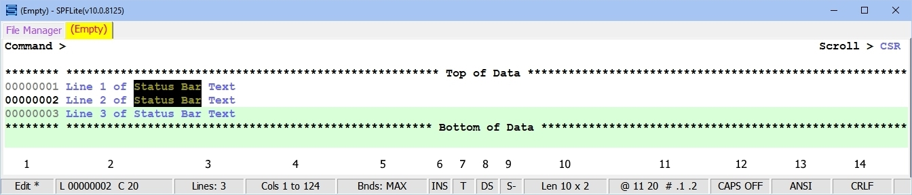

Status Bar Contents
The bottom line of the SPFLite window is reserved for the Status Bar. This contains a variety of information regarding the current file being worked on and is constantly updated. The status line looks like this:

The above display shows a status bar with all possible boxes displayed. You can choose yourself which boxes to display and in what order, from left to right you wish them to appear. See "Options - SBar" for how to alter this.
The boxes, and their Names and Descriptions follow:
Box 1 (MODE) |
This will show either Edit, Browse, View , Clip or Set Edit. Edit is the standard operating mode. Browse can be started with a B line command in File Manager, or by using a BROWSE command. View with a V line command or VIEW command. Clip is displayed when you are directly editing the Windows clipboard, and is entered by using the CLIP command. If you are editing the list of SET variable values, you will see Set Edit. Some of these various modes can be started using various command-line options. See Starting and Ending SPFLite for details. If you open a Read Only file, whether via Edit or Browse, SPFLite will open it in Browse mode, and then change the operating mode indicator to RdOnly. The RdOnly indicator is a reminder that the file has the Read Only attribute, but otherwise is identical to being in Browse mode. See Working with Read Only Files for more information. When the data in the tab has been modified and not yet saved, an * will appear following the descriptive text. For example, modified edit file will show Edit * When the tab is in Multi-Edit mode, the word Edit will be preceded by the number of files currently loaded in the tab and the modified indicator ( * ) will be preceded by a number indicating how many files have been modified. If 3 files are loaded, and 1 is modified, the box will contain 3 Edit 1* Note: The * modified indicator will appear right away, as soon as you type something to modify the file. You will also see the name of the file change color in the file tab for it on the top of the screen, but the change in file-tab color will happen only when you press Enter or issue a primary or line command (either directly or via a mapped key). So until you do one of those things, the * modified indicator and the presence of the file tab's modified color may be briefly out of sync. It's just a design limitation about how quickly the screen can be updated, and is nothing to worry about. |
Box 2 (LINNO) |
If the cursor is located within the text area, this area shows the line number as L 000123 then column number as C 1, and then an optional tag name when a line has both a label and a tag at the same time. When a command like FIND ABC X DX causes the cursor to be in the “interior” of an excluded region, the Line/Column display will appear in reverse video. When there is no meaningful column number (like when entering a line command) it will not appear here. When the cursor is not on a data line (like on the primary command area) the entire Line/Column display will be blank. If the cursor is logically located on an excluded line, the box will display in white on green to highlight this condition. So, if the cursor is on column 8 of excluded line 4, you will see L 00004 C 8 If the cursor is not within a data area or line command area, then this field will show the Last Modified Date/Time of the edit file. This will be displayed as standard ISO date and time format. e.g yyyy-mm-dd hh:mm:ss |
Box 3 (LINES) |
The current number of text lines in the file. |
Box 4 (COLS) |
The current visible range of text columns. |
Box 5 (BNDS) |
The current BOUNDS setting. If no BOUNDS are set it will say BNDS: MAX, if Bounds are active it will display the left and right column boundaries. When the BOUNDS setting is anything other than MAX, the status line display will show the BOUNDS setting in white letters on a red background, like Bnds: 1 to 40 so that it can't be ignored. This will help users to avoid the unexpected and nonstandard handling of data that occurs when non-default bounds are in effect, if that was not their intent. |
Box 6 (INSOVR) |
The current Insert mode. INS = Insert mode OVR = Overtype mode. If you have invoked the (DataInsert) primitive to enter Data Insert mode, it will show as INS . |
Box 7 (CASE) |
The current CASE setting. C = Case sensitive T = Case insensitive. The C and T codes have the same meaning as C strings and T strings on FIND and CHANGE commands. In addition, the 'search context' used as a default by FIND/CHANGE commands is shown here. When the search context is CHARS mode, the box will contain C or T. When the search context is WORD mode, the box will contain C W or T W. The search context is altered by the FIND command, and by the Use WORD as the default for FIND/CHANGE option of "Options - General". |
Box 8 (CHANGE) |
The current CHANGE column/data shift mode. DS will be displayed for normal Data Shift mode, CS for Column Shift mode. See Change Data Shift Modes for details. Because Data Shift is the default shifting mode, as traditionally supported by ISPF, you can also think of DS as meaning Default Shift. |
Box 9 (STATE) |
The current status of the associated STATE file for this edit. If S+ is displayed, it indicates that there is a currently existing STATE file. If S- is shown, no existing file exists. See Saving the Edit STATE for more information. |
Box 10 (MISC) |
Used for various important information messages, such as when Power Typing or recording is active. When there are no messages being displayed here, one of these information fields will be present:
For larger files, there is a small “underline display” at the bottom edge of this status box. You will see it slide left and right as you scroll up and down in the file. It is intended to give an approximate “gauge” of where you are in the file, somewhat like Windows does with a vertical scroll bar. |
Box 11 (SELECT) |
The current text selection values. This can be: Blank There is no current selected text area. @ nn mm # .L1 .L2 If there is a currently selected area the two numbers following the @ are the starting and ending columns of the selected text. The values after the # are the starting and ending line range. The @ and # characters are reminders that these are the substitution characters that can be entered as command line operands to substitute in the displayed values. Select If the word 'Select' is displayed, it indicates that values exist for a selected area, but they are currently inactive. The status of a selected area can be toggled between active and inactive by either left-clicking on this box, or by using a key assigned to the (ToggleSelect) keyboard primitive. |
Box 12 (CAPS) |
The current CAPS mode. This field can contain one of four values: CAPS ON CAPS OFF CAPS AUTO: on CAPS AUTO: off The last two bear explanation. In ISPF, no matter what you set your CAPS mode to, the ISPF editor will examine your file when you open it. If it finds data which is contrary to your CAPS setting, it will forcibly change the CAPS mode ON or OFF to conform to whatever is in your data, and that CAPS setting will be permanent (until you change it, or ISPF changes it again in the same way). Experience has shown that the way that ISPF handles this can be problematic. In SPFLite, when you set CAPS mode to ON or OFF for a given file type, it stays that way until you alone change it. SPFLite never changes the CAPS mode from ON to OFF or vice versa, by itself. Note that when CAPS ON is in effect, while you are typing in new characters on a data line, they will appear in the "Text - High-Intensity" font color. This is done as a visual reminder that the alphabetic data you are entering is being forced to upper case (this is regardless of the Caps Lock key). If that is not what you wanted, issue the CAPS OFF command. Using CAPS ON is common for mainframe data, while CAPS OFF is more typical of PC data. If you set CAPS mode to AUTO, the caps mode is “conformant”. The file is examined, comparable to how ISPF does it, but in SPFLite this setting is only temporary. When you open the file again, the file examination is repeated. The “on” or “off” displayed in lower case is a reminder that the current automatic/conformant caps mode is temporary, and is not stored in the PROFILE, whereas CAPS ON and CAPS OFF is stored in the PROFILE. The AUTO part of AUTO: on or AUTO: off is stored in the PROFILE, but the on/off setting itself is not stored. |
Box 13 (SOURCE) |
The current character set being used. This is controlled by the SOURCE Profile setting. The default is ANSI. Other possible values are EBCDIC and various Unicode settings. |
Box 14 (EOL) |
The current EOL setting. This show how the End Of Line value has been set in the PROFILE. It defines how SPFLite determines where the end of a line is located. The standard ending for Windows text files is CRLF. EOL may display CRLF, CR, LF, NL, AUTO, AUTONL, or two or four hex digits. It may also be set to NONE, meaning there are no terminators. NONE requires an explicit record length to be defined with an LRECL profile option. When you have EOL AUTO or EOL AUTONL in effect, and PAGE ON is also in effect, this field will display the current page number in the edit screen, in the format of Pg: 1 of 5. Because this replaces the AUTO or AUTONL state of EOL, you would have to issue a PROFILE command to determine which of these specific EOL settings were in effect. Users of SYSOUT files normally do not change the AUTO/AUTONL setting once it's defined, so for most people, omitting the AUTO/AUTONL display here should not present an inconvenience. |
Created with the Personal Edition of HelpNDoc: Create help files for the Qt Help Framework